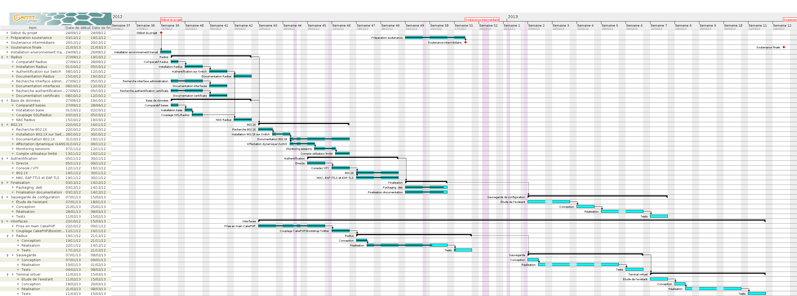

Projet industriel
b.h. consulting SNACK
21 mars 2013
N. BOUGET, J. GUÉPIN, M. PINHÈDE, J. VAUBOURG
Plan
- Contexte
- Gestion du projet
- Authentification sur le réseau
- Sauvegarde de configurations
- Interface utilisateur Snack
Contexte : le projet industriel
Projet en 3ème année de TELECOM Nancy dans un contexte industriel
Gestion du cycle complet du projet
250 heures par étudiant (12 heures par semaine)
Suivi par un encadrant industriel (Guillaume ROCHE) et un encadrant universitaire (Jean-François SCHEID)
Contexte : le client, b.h. consulting
Entreprise spécialisée dans l'implantation de réseaux d'entreprise
Fondée par Bertrand PÉTAT en 2000

Contexte : le client, b.h. consulting
4 employés :

Contexte : notre équipe
- Nicolas BOUGET, chef de projet (TRS)
- Julien GUÉPIN (IL)
- Marc PINHÈDE (LE)
- Julien VAUBOURG (TRS)
Contexte : objectifs du projet
Sécurite des réseaux d'entreprise
Contrôle des accès au réseau
Gestion des configurations des équipements
Solution simple à installer et à utiliser
Notre solution : SNACK (Secure Network Access Control K???)
Gestion du projet
Réunions :
- hebdomadaires avec Guillaume ROCHE
- mensuelles avec Jean-François SCHEID
Outils utilisés :
Gestion du projet : VM project
Application proposée par l'école pour aider la gestion des projets industriels
Définition d'un diagramme Gantt en début de projet
Définition et affectation des tâches, suivi de progression
Feuilles de temps
Rapports de réunions

Gestion du projet : planning prévisionnel

Gestion du projet : Redmine
Dépôt de sources Subversion hébergé par l'école
Tickets : gestion des bugs et demandes de fonctionnalités
Conventions de codage sur le wiki

Authentification sur le réseau
Authentification des utilisateurs du réseau de l'entreprise
Utilisation du protocole 802.1x
Plusieurs méthodes d'authentification :
- Certificat
- Identifiant et mot de passe
- Adresse MAC
Authentification : implémentation

Implémentation avec le serveur libre FreeRadius

Stockage des données dans MySQL
Fonctionnement de 802.1x
Schema trop cool a mettre ici
Gestion des configurations
Sauvegarde des configurations des équipements réseau
Versionnage et comparaison des configurations
Restauration d'une ancienne configuration
Gestion des configurations : implémentation
Trappes SNMP toussa...
Fonctionnement de la sauvegarde : authentification

Fonctionnement de la sauvegarde : écriture mémoire

Interface utilisateur Snack
Application web simple, ergonomique et securisee
Configuration du serveur Radius
Gestion des configurations
Interface utilisateur Snack : implementation

Serveur LAMP
CakePHP pour les traitements

Bootstrap pour l'affichage
jQuery pour simplifier le traitement cote client
Vacances !
Merci pour votre attention
←
→
/
#